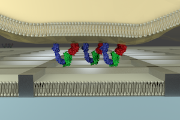
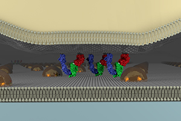

サイズのコントロールされたミクロ／ナノ構造を用い、細胞表面のレセプターの集合体形成と輸送の動的挙動を操作・観察することができます。トップダウン型あるいはボトムアップ型のアプローチにより、数10 nm〜10 µmオーダーの微小構造を形成し、それとsupported lipid bilayer (SLB) を組み合わせることで、シグナル分子の集合体の動的挙動を研究しています。
リソグラフィーによる拡散バリアー
SLBの個々の脂質分子は２次元方向に自由に拡散できますが、リソグラフィーによって金属の格子（線幅80 nm、高さ5 nm、枠の辺の長さ 500 nm〜数100 µm）を描くことで脂質分子を格子内に閉じ込めることができます。それにより、SLB上に担持されたリガンドと細胞表面の受容体が形成した複合体の二次元方向の輸送を阻害することができます。細胞表面の受容体の集合体形成と輸送挙動が細胞のシグナリングに与える影響を調べることができます。
金ナノ粒子によるサイズふるい
ミセルの自己組織化によって、金ナノ粒子をガラス基板上に粒子間距離を制御して（40 nm〜180 nm）規則正しく配置することができます。左記の拡散バリアーが脂質分子を格子内に閉じこめる構造であるのに対し、この金ナノ粒子は基本的には脂質分子を閉じ込めません。しかし、基板上の集合体のサイズがナノ粒子の粒子間距離に対して大きくなるとその集合体の移動がブロックされます。これにより、細胞表面のシグナリング集合体の動的挙動を観測・操作することができます（Caculitan, Kai, Liu, et al. Nano Lett. 2014）。